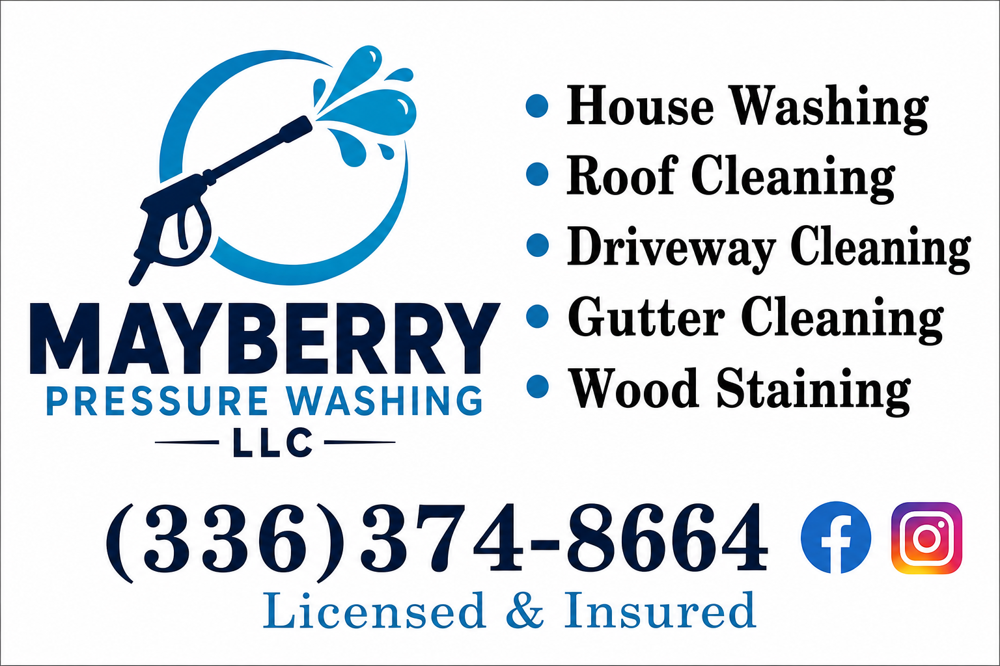

House Washing
Clean siding, trim, soffits, porches, and entry areas with a method matched to the surface.
Mount Airy, NC and the Triad
Residential and commercial exterior cleaning serving Mount Airy, NC and the Triad, including house washing, soft washing, roof washing, driveways, gutters, windows, decks, fences, staining, and gutter guards.
Different surfaces need different methods. The service mix covers the high-visibility areas homeowners and business owners ask about most.
Clean siding, trim, soffits, porches, and entry areas with a method matched to the surface.
A lower-pressure approach for siding, roofs, and surfaces where force is not the answer.
Concrete cleaning for driveways, sidewalks, patios, pads, and other high-traffic surfaces.
Roof cleaning starts with a look at the material, staining, access, and proper cleaning method.
Gutter cleaning, exterior gutter care, and window cleaning for a more finished exterior.
Deck cleaning, fence cleaning, deck staining, and fence staining for outdoor wood surfaces.

Free QuoteTell Mayberry what needs cleaning, where the property is located, and the team will recommend the right service for the surface.
Mayberry Pressure Washing works across Mount Airy, NC and the Triad, with pages ready for the towns customers search from most.
Project gallery
A rolling look at house washing, concrete cleaning, deck care, awning washing, and commercial exterior work from the Mayberry gallery.
Google reviews
Thank you so much to every customer who trusts Mayberry with their home. If you are happy with the work, Carter would really appreciate you checking out the website and recommending Mayberry Pressure Washing to someone who may need exterior cleaning.
Quick answers
Short answers for homeowners, property managers, and business owners comparing exterior cleaning options around Mount Airy, NC and the Triad.
Mayberry offers house washing, soft washing, roof cleaning, driveway cleaning, surface cleaning, gutter cleaning, window cleaning, deck and fence cleaning, wood staining, gutter guards, and commercial exterior cleaning.
Service areas include Mount Airy, Winston-Salem, Pilot Mountain, Elkin, Dobson, Wilkesboro, and nearby Triad communities.
Call or text (336) 374-8664, or send the property city, service needed, and photos through the estimate form.
Send the city, service needed, and a few project details so Mayberry Pressure Washing can quote the right scope.